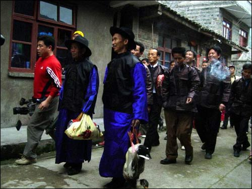
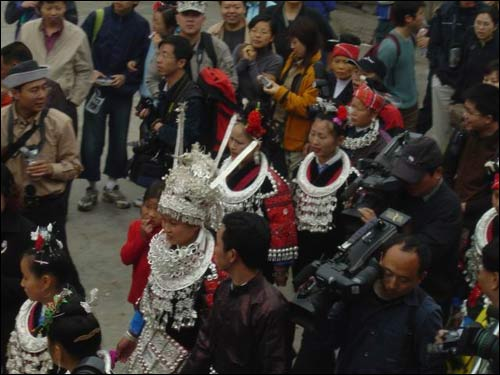
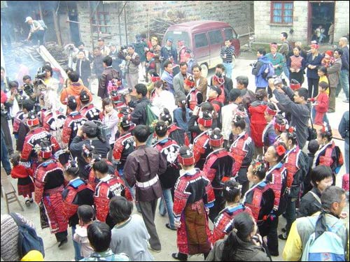
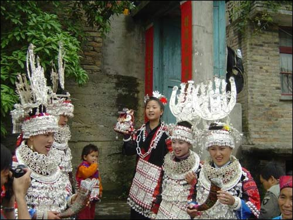
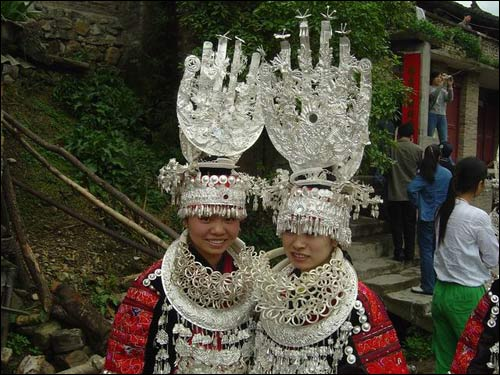

正大光明去"游方"
苗族的婚姻比较自由,青年男女婚前都享有充分的社交自由,父母一般不干涉,每逢节庆、赶场的日子,他们便利用聚会的时机对唱情歌、谈情说爱、互诉衷情。这种婚前恋爱的方式在贵州黔东南称为"游方"。游方是黔东南一带苗族青年男女自由恋爱的一种传统习俗。游方的地点除在每个村寨所设的固定的"游方坡"外,还可选在离村寨较远的河岸、挢头、田间或花木丛生、风景宜人的山谷去进行游方活动。但都得按照苗家的规矩,青年男女游方的地点必须在公开的地方进行。如果在隐蔽的地方进行这一活动,一旦被人发现,就会认为是不正当的行为,受到社会舆论的谴责。
新婚当夜不同房
经过一段时间的游方后,如果双方情投意合,通常是互赠信物或立下山盟海誓,私下订婚。私下订婚的男女到了约定的婚期,男方就邀请几个伙伴到女方寨子"游方",顺便将女子带回家中。按照习惯,新婚夫妇当夜不能同房,新娘要由男方的姑嫂陪伴过夜。第二天,男方托媒人携带礼物去女家提亲。如女方同意,便收下礼物,宴请媒人。随后,女方备一份与男方相等或稍多的礼物回赠男方。男方得知女方赞成这门亲事,便设宴招待前来祝贺的亲戚朋友。
新婚后不落夫家
过去,黔东南地区的苗族在新婚后有"不落夫家"的习俗。新娘结婚不久便回娘家居住。属于父母包办婚姻的新娘,在举行结婚仪式的当天或次日,即回娘家居住。住娘家的时间,未成年的早婚妇女一般是六七年,成年妇女一般为三四年。在此期间,仅仅在农忙和重大节日,或遇到夫家丧事时才可暂回夫家居住。
苗族婚礼 接伞、祭祖、吃合欢酒、挑喜水、捉喜鱼等仪式。送亲人群要在大门外唱“拦门酒”和“牛角酒”歌。
自由式婚姻新娘子在认亲后可回新郎家居住。古典式婚姻新娘子在婚礼结束后即回家居住，待到夫家有婚丧大事或农忙季节才到夫家小住几天，称“双边居住”。新娘第二次上夫家时，由兄弟、伯婶娘及嫂子等人抬糯米饭一挑，鱼数条，猪肉一腿陪同前往，夫家请众亲族来“吃客饭”，并逐户宴请客人。送客人时还要献飘带。新娘子住上十天半月后，夫家亦备同样的礼物送其回门，受同样礼同。数年后，新媳妇才到夫家正式落户。在未进行“模锅灶”仪式之前，新媳妇只能动一方家锅灶。苗族婚姻习俗地区差异较大，别具一格。天柱地区部分苗族出嫁之前夜有唱伴嫁歌习俗；榕江八开、丹寨排调一带部分苗族有以牛作为聘礼的；台江台农一带新郎在新娘子进家到婚礼结束这几天都不露面，白天照常上山干活，晚上到亲族家借宿。
苗族婚姻关系中，夫妻不睦，双方均可提出离婚。一般是先提出离婚者向对方赔礼赔钱。男方提出离婚，除不得索回定亲的“你姜”外，还必须付给女方一笔“陪礼一”。女方提出离婚，必须付给男方相当于定亲时“你姜”和婚礼费用的总值。此后，男婚女嫁，互不干涉。过去离婚都是经过寨老们调解无效后，将一竹片刻上花纹，从中划破给男女双方为证。现在，离婚大多经过政府和司法机关裁定。
苗族寡妇可再嫁，鳏夫可续弦。兄死弟未婚者，可以要求嫂子转房或实行“小叔填房”，有的地区还允许兄纳弟妇，但要双方同意，不是重婚。榕江一带在决定转房后，必须向女方舅舅送一定数量的钱或牛作聘礼。没有实行转房或填房的年轻未生子女的寡妇，一般多自行改嫁。改嫁时，新夫可以不开“你姜”。有子女而夫家又无人抚养的，一般多跟随母亲，男孩长大以后可回生父家继承产业，女孩也可以继父家出嫁。寡妇从亡夫家改嫁时，须在夜间从后门出走，此后不再跨进原夫家门。年轻或中年丧偶的男子，不论有无子女均可续弦。有些地区习俗规定，妻子死后三年才能再娶，如不满三年再婚的，须给亡妻兄弟三十三元钱。
苗族婚礼苗族婚俗，一般在族内异姓通婚，不和其他民族通婚，男女青年在恋爱、婚姻问题上一般比较自由，但又多由父母包办。建国后，已发展为男女双方自由恋爱成婚为主。 婚姻一般有恋爱、提亲、定婚和举行婚礼等仪式。
苗族青年男女通常通过自己参加采花山、跳月等节日、喜 庆活动，在欢歌狂舞中寻找自己的心上人。当双方关系确定真 诚相爱后，请媒人向双方父母求亲，并协商定男方向女方送的 聘礼数目，并带酒肉给女方姑舅亲友吃，就算已定婚。依男方 情况，便择吉日举行婚礼。
结婚那天清早，新郎便由一个陪郎伴送，视路程远近，或骑马、或徒步到女方家娶亲，若路程较远的那则要提前三至五天去接亲，并要请人或由新郎家人翻山越岭邀朋约发前来参加婚庆。居住在巍山县境内的苗族，因人口少，联姻往往出县，因此举行婚礼的时间视女方家和亲戚远近而定，一般为三天， 即第一天为接新娘，第二天返回，第三天送客，当地人称为 “谢客人”。苗族人举行婚礼这天，也就是正喜日，全村寨的人沉浸在 一派欢乐的喜气中，男方家不仅要摆下酒席招待四方客人和全寨老少，还要请歌手们来演唱婚礼仪式歌和生产、生活、人情 世故等风俗歌，使婚礼在欢歌和祝福声中进行。晚上，全村寨 的男女老少和外来的宾客各自寻找伙伴，围着燃起的堆堆篝火 载歌载舞，把婚礼推向高潮，歌舞通宵达旦，以示对新婚夫妇 的祝福。 次日，吃过早饭后，在宾客返归时，男方父母陪伴新郎新 娘回门，在女方家住一天后，返回男方家，婚礼才结束。
苗族婚礼与“嘎哈批”
人类从原始社会经过漫长的岁月进入现代文明，离不开符号记事的贡献，而今麻山地区四大寨的苗族人民仍在婚礼进程中承袭着符号记事的原始遗风。
“嘎哈批”苗语译音，意即打草标。
当在新娘家举行各种礼金支付仪式结束后，新娘家的一名歌手拿来早先准备好的一把稻草芯，捆住草芯下端，正端分下三簇，每簇各打一个节，在中端扎杂处系上用纸包好的几角钱，然后对着草标用苗族大声咒念，追溯苗家先民创业史，迁徙史，数落新娘家族中已出嫁的三辈妇女出嫁后的美德，祝愿新娘像前辈一样，夫妻恩爱，孝敬公婆，勤俭持家，对新郎进行传统教育，说完后，大家齐哼“啊嘞哩－－哩嘞啊”末了，新娘家歌手双手捧起草标递给新郎家的歌手。接过草标的歌手又对草标大声念起来，仍是追溯苗家先民创业史，迁徙史，数落男家娶进三辈妇女的美德，希望新娘进家后也能像她们一样，说完，大家又哼“啊嘞哩－哩嘞啊”、礼毕，新娘家歌手即唱起酒歌挽留挽留迎新队。新郎家歌手也以歌婉言谢绝。得到对方放行许可后，双手捧着草标谢了对方，然后拿给新郎的叔或伯的妻室儿女双全的男人插于腰背后，沿途不过人家屋檐下，更不能再进新娘家的门。还不能反脸往后看，直背到新郎家插于洞房中、临行时领队的（多为男方家主）分别送给送行人每人一角“送别钱”后领着队伍登程。
草标插于洞房后，无论何人不得人为移动，一切顺其自然。
格凸的苗族人民对其草标为何会有这样的心态。钱荫愉在《苗族的无字文化》一书导言中说：“虽经岁月的剥落，蒸发和滤掉了许多意识和功利的内容，以及种种古老的意象，但经过抽象和变体的一些‘化自然’的心灵符号，却积淀了民族单纯直率的感觉经验，满带着远古荒原上粗放雄强，自由而富于生命力的气息，而且那浪漫主义的精神内核，一代一代，沟通了人类的心灵，把不同时代，不同地域，不同文化氛围中的人以深层意识上联系起来”。正因为这样，四大寨的苗族把草标看成是儿女生命和钱财的象征，又是新郎家得到新娘的凭证，不管当天因何原因不能娶走新娘，只要草标在手，新娘属于新郎家的人了。此婚事就具有“法律”效力了。
据调查，草标中每个节和每一物态有其特定意象。用稻草芯打草标即有心心相映，又有五谷丰登之理，白纸意为新娘一身清白，钱表示钱财有不尽，而分出的三个草疙瘩，左边一个表示夫妻恩爱，白头头偕老，儿孙满堂。由于苗族结婚较早，婚后数年才“坐家”。这个草疙瘩又表示从即日起，新娘即是娘家人，又是夫家人，其行为即有自由又受到大家的约束。坐家前，新娘仍可唱情歌娱乐，也可谈情说爱，但要背着双方父母和丈夫。若是男方嫌弃妇方，有苗语云： “哈 哈启喜哈亮，哈呕哈丫喜哈向”。意思是在集市上打强盗可以打重，而打自己家的妻子只能做做样子，相反，女方嫌弃男方，也不允许到男家做一些没良心的事，如在山上乱丢劳动工具或糟蹋粮食等。
右边的草疙瘩表示从即日起这门亲戚久长久远，相互往来，双方不要随便听信他人间离，听到之后有则改之，无则加冕，大事化小，小事化了。
三个草疙瘩扎成一束，则表示两亲家从此团团结结，友好往来互相帮助，如出现问题应由双方家庭解决。超越以上行为者，应对该草标负责。
格凸的苗族认为打草标寄寓威力，五谷丰登，降灾赐福，驱鬼疫，这种草标崇拜不仅在婚礼中有，而且整个日常生活中随处可见，现列几例如下：
1、外出赶场，走亲访友，路过“神树”，山神庙，做完每件劳活，庄稼遭虫病灾等，打草标插在其中保佑平安或丰收。
2、路遇山崩、地裂、石滚等打草标于此消灾免祸。
3、柴草或遇到峰窝、或砍树、或开荒等归先打草标者所有。
4、办丧事时，把粑粑装入饭萝后，打草标绕饭数圈保佑死者上天时食用。
5、埋人挖井完后，打草标为死者占井。埋好后，再打草标并拾坟土一陀同带回家中，表示儿女已送老人归天了，了结心事一桩。
在四大寨苗族的心态里，草标不仅具有记事、凭证、教育、传递信息、消灾等功能，还有驱鬼、杀鬼功能。除了在婚礼中专用稻草芯打草标外，其一均用芭茅或茅草，他们视芭茅草似刀剑，能驱鬼杀鬼。
6、夜间出入，怕有鬼跟后，打草标拦之。
7、人在外面生病，先在门槛上打好草标，“扫”病人身上，然后插在门口隔鬼，若是在家中得的病，打草标“扫”病人身，或于屋内驱鬼出门，将草标插于门外等。
格凸苗族打草标的习俗，可以说是苗族无字文化的活化石，值得研究。